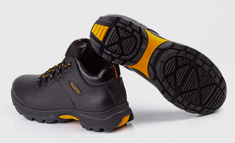
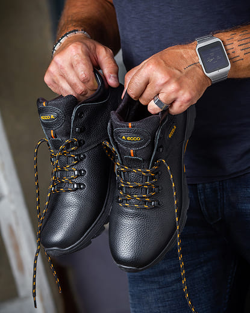
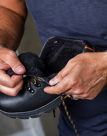

<section class="advantage__section">
  <div class="advantage__section-wrapper container">
    <div class="advantage__left">
      <h3 class="advantae__title">RECEPTOR®</h3>
      
      <p class="advantage__text" data-aos="fade-right">
        <span>Інноваційна система</span>, що повторює природний рух стопи. Підтримує ногу на всіх
        етапах кроку — від удару п’ятки до відштовхування — забезпечуючи
        <span>стабільність, комфорт і легкість руху</span> навіть на тривалих прогулянках.
      </p>
      <a href="#card" class="order__btn" data-aos="fade-right"> Обрати свою пару </a>
    </div>
    <div class="advantage__right">
      <h3 class="advantae__title">Внутрішнє наповнення</h3>
      <div class="advantage__items">
        <div class="advantage__item advantage__item-1" data-aos="fade-left">
          
          <p class="advantage__text">
            <span>Натуральна підкладка</span> забезпечує оптимальний мікроклімат усередині
            черевиків. Вона підтримує тепло, дозволяючи ногам залишатися сухими та комфортними
            протягом усього дня.
          </p>
        </div>
        <div class="advantage__item advantage__item-2" data-aos="fade-left" data-aos-delay="200">
          
          <p class="advantage__text">
            <span>М’яке хутро</span> доповнює внутрішнє наповнення, додаючи відчуття затишку та
            легкості при кожному кроці, навіть у сильний мороз.
          </p>
        </div>
      </div>
    </div>
  </div>
</section>
